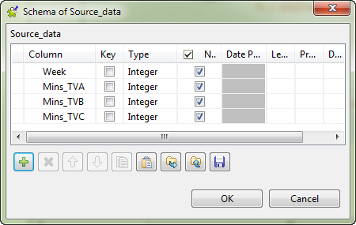
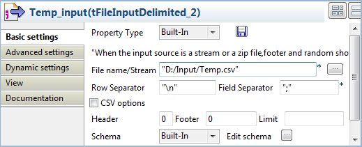
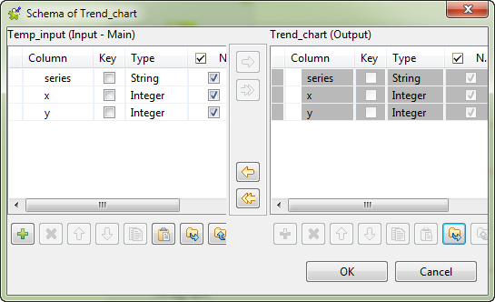

|
Famille de composant |
Business Intelligence/Charts | |
|
Fonction |
Le composant tLineChart lit des données à partir d’un flux d’entrée et transforme les données en graphique en lignes dans un fichier image au format PNG. | |
|
Objectif |
Le composant tLineChart génère un graphique en lignes à partir des données d’entrée afin de faciliter l’analyse technique. | |
|
Basic settings |
Schema et Edit schema |
Un schéma est une description de lignes, il définit le nombre de champs qui sont traités et passés au composant suivant. Le schéma est soit local (Built-in) soit distant dans le Repository. NoteLe schéma du tLineChart contient trois colonnes en lecture seule nommées respectivement series (type String), category (type String), et value (type Integer), selon un ordre prédéterminé. Les données de toutes les autres colonnes seront simplement passées au composant suivant, s’il y en a un, mais elles ne seront pas présentes dans le diagramme en barres. |
|
|
|
Built-in : Le schéma est créé et conservé pour ce composant seulement. Voir également le Guide utilisateur de Talend Open Studio. |
|
|
|
Repository : Le schéma existe déjà et est stocké dans le Repository. Ainsi, il peut être réutilisé. Voir également le Guide utilisateur de Talend Open Studio. |
|
|
Sync columns |
Permet de synchroniser le schéma du fichier d’entrée avec le schéma du fichier de sortie. La fonction Sync ne s’affiche que lorsqu’une connexion de type Row est connectée au composant de sortie. |
|
|
Generated image path |
Nom et chemin d’accès du fichier image de sortie. |
|
|
Chart title |
Saisissez le titre du graphique en lignes à générer. |
|
|
Domain axis label et Range axis label |
Saisissez le nom de l’axe domain (axe X) et le nom de l’axe range (axe Y). |
|
|
Plot orientation |
Choisissez l’orientation qu’aura votre graphique en lignes : VERTICAL ou HORIZONTAL. |
|
|
Include legend |
Saisissez true dans ce champ si vous souhaitez inclure une légende indiquant les lignes des séries dans des couleurs différentes ; sinon, saisissez false. |
|
|
Image width et Image height |
Saisissez la largeur et la hauteur du fichier image, exprimées en pixels. |
|
|
Moving average |
Cochez cette case afin d’afficher la moyenne mobile de chaque série dans votre graphique en lignes. Lorsque cette case est cochée, le champ Period apparaît et vous pouvez définir la période dans laquelle apparaît la moyenne mobile. |
|
|
Lower bound and Upper bound |
Définissez quelles sont les plus hautes et les plus basses valeurs qui seront affichées sur l’axe range. |
|
|
Chart background et Plot background |
Choisissez dans la liste la couleur de fond du graphique ainsi que la couleur de fond du plan du graphique (zone de l’orientation). |
|
Advanced settings |
tStatCatcher Statistics |
Cochez cette case pour collecter les données de log au niveau du composant. |
|
Utilisation |
Ce composant est un composant de sortie. Par conséquent, il requiert un composant d’entrée ainsi qu’une connexion de type Row Main. | |
Ce scénario décrit un Job simple qui lit les données d’un fichier CSV et les transforme en graphique en lignes afin de faciliter l’analyse des tendances. Le fichier d’entrée indique combien de temps (en minutes) par semaine une personne regarde différentes chaînes de télévision, sur une période de dix semaines, comme présenté ci-dessous :
Week;TV_A;TV_B;TV_C 1;327;286;244 2;326;285;243 3;325;283;245 4;323;282;246 5;322;285;248 6;321;288;247 7;322;291;245 8;321;292;244 9;320;293;243 10;319;294;242
Le fichier d’entrée ayant une structure différente de celle requise pour l’utilisation d’un tLineChart, un tMap sera utilisé dans ce scénario, afin de mettre en correspondance les données avec un fichier CSV ayant la structure requise, avant d’utiliser le tLineChart pour générer un fichier représentant le graphique en lignes.
Note
Le tMap est généralement utilisé afin d’adapter le schéma d’entrée, conformément à la structure du schéma du composant tLineChart. Pour plus d’informations concernant le composant tMap, consultez le Guide utilisateur de Talend Open Studio ainsi que le composant la section intitulée « tMap ».
A partir de la Palette, déposez les composants suivants dans l’espace de modélisation graphique : deux composants tFileInputDelimited, un tMap, trois composants tFileOutputDelimited et un tLineChart.
Connectez le premier composant tFileInputDelimited au tMap à l'aide d'une connexion Row > Main.
Reliez le tMap au premier tFileOutputDelimited à l'aide d'une connexion Row > Main et appelez-la TV_A.
Répétez l'étape ci-dessus : connectez le tMap aux deux composants tFileOutputDelimited restants à l'aide d'une connexion Row > Main et appelez-les respectivement TV_B et TV_C.
Connectez le composant tFileInputDelimited au tLineChart à l'aide d'une connexion Row > Main. Cliquez sur Yes pour valider la propagation du schéma à partir du composant cible.
Connectez le premier composant tFileInputDelimited au second tFileInputDelimited à l'aide d'une connexion Trigger > OnSubjobOk.
Connectez le premier tFileDelete au premier composant tFileInputDelimited, et le second tFileInputDelimited au second tFileDelete à l'aide d'une connexion Trigger > OnSubjobOk.
Renommez les composants comme vous le souhaitez afin qu’ils décrivent au mieux leur fonction.

Double-cliquez sur le premier composant tFileInputDelimited afin d’afficher l’onglet Basic settings.

Renseignez le chemin d’accès au fichier à traiter dans le champ File name en parcourant votre répertoire et en sélectionnant le fichier d’entrée.
Spécifiez dans le champ Header le nombre de lignes d’en-tête, une dans ce scénario. Laissez les autres paramètres tels qu’ils sont.
Cliquez sur Edit schema pour décrire la structure des données du fichier d’entrée. Dans ce scénario, le schéma d’entrée est composé de quatre colonnes : Week, Mins_TVA, Mins_TVB, et Mins_TVC. Une fois le nom des colonnes et les types de données définis, cliquez sur OK pour fermer la boîte de dialogue du schéma.

Double-cliquez sur le tMap pour ouvrir l’éditeur Map Editor.
Le panneau de sortie contient une table d'entrée, ici row1, et le panneau de sortie contient trois tables vides nommées TV_A, TV_B et TV_C.
Utilisez l’éditeur Schema editor pour ajouter trois colonnes à chacune des tables de sortie : series (type String), x (type Integer) et y (type Integer).
Dans le champ Expression de chaque table de sortie, saisissez les noms des series, comme indiqué ci-dessus. Ces noms apparaîtront dans la légende du graphique en lignes.
Déposez la colonne Week de la table d’entrée dans la colonne x de chaque table de sortie.
Déposez la colonne Mins_TVA de la table d’entrée dans la colonne y de la table TV_A.
Déposez la colonne Mins_TVB de la table d’entrée dans la colonne y de la table TV_B.
Déposez la colonne Mins_TVC de la table d’entrée dans la colonne y de la table Mins_TV_C.

Cliquez sur OK pour sauvegarder le mapping, fermer l’éditeur et propager le schéma de sortie au composant de sortie.
Double-cliquez sur le premier composant tFileOutputDelimited pour afficher l’onglet Basic settings.

Dans le champ File Name, définissez un fichier CSV dans lequel les flux de données mappés seront envoyés. Dans cet exemple, nommez le fichier de sortie à créer Temp.csv. Ce fichier sera utilisé comme fichier d’entrée pour le composant tLineChart.
Cochez la case Append.
Définissez les paramètres des deux autres composants tFileOutputDelimited exactement de la même manière que dans le premier tFileOutputDelimited.
Note
Notez que l'ordre des flux de données sortant du composant tMap n'est pas nécessairement l'ordre dans lequel les données seront écrites dans le composant cible. Pour vous assurer que le fichier est correctement généré, supprimez, s'il existe, le fichier portant le même nom avant d'exécuter le Job. Vérifiez que la case Append est cochée dans tous les composants tFileOutputDelimited afin que tous les flux de données mappés aillent dans le même fichier, sans écraser les données existantes.
Double-cliquez sur le second composant tFileInputDelimited afin d’afficher son onglet Basic settings.
Saisissez, dans le champ File name, le chemin d’accès au fichier, ainsi que son nom, le même que celui défini dans chaque composant tFileOutputDelimited. Dans cet exemple, le fichier d’entrée du tLineChart est Temp.csv.
Double-cliquez sur le composant tLineChart pour afficher l’onglet Basic settings.

Cliquez sur Edit schema afin d’ouvrir la boîte de dialogue du schéma.
Le schéma d'entrée et de sortie doivent être synchronisés. Si besoin est, copiez toutes les colonnes du schéma de sortie dans le schéma d’entrée en cliquant sur la double-flèche pointant vers la gauche. Cliquez sur OK pour fermer la boîte de dialogue du schéma.
Dans le champ Generated image path, définissez le chemin d’accès du fichier image à générer.
Dans le champ Chart title, saisissez un titre pour le graphique en lignes. Dans ce scénario, son titre est
Average Weekly Viewing (per person).Saisissez un nom pour les axes (X) et (Y). Dans ce scénario, le nom des axes est respectivement
WeeketMinutes.Définissez comme vous le souhaitez la taille de l’image (dans les champs Image width pour la largeur et Image height pour la hauteur), la période dans laquelle est calculée la moyenne mobile (dans le champ Period une fois la case Moving average cochée), les limites inférieures et supérieures (respectivement dans les champs Lower bound et Upper bound), ainsi que la couleur de fond du graphique et du plan (respectivement dans les champs Chart background et Plot background).
Dans ce scénario, définissez la taille de l'image à 450 by 450, paramétrez le champ Lower bound à 210 et Upper bound à 340, sélectionnez Light_gray dans la liste Chart background et laissez les autres paramètres tels qu'ils sont.
Double-cliquez sur le premier composant tFileDelete pour afficher sa vue Basic settings.

Dans le champ File name, renseignez le chemin d'accès du fichier d'entrée et décochez la case Fail on error pour permettre au Job principal d'être exécuté si le fichier à supprimer n'existe pas.
Spécifiez le même chemin d'accès que dans l'autre composant tFileDelete.